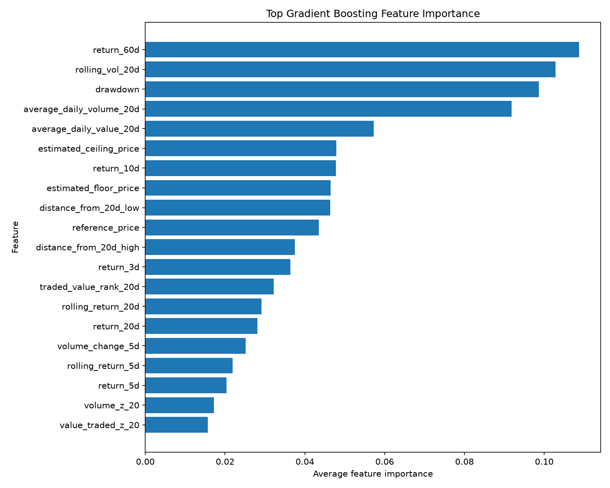
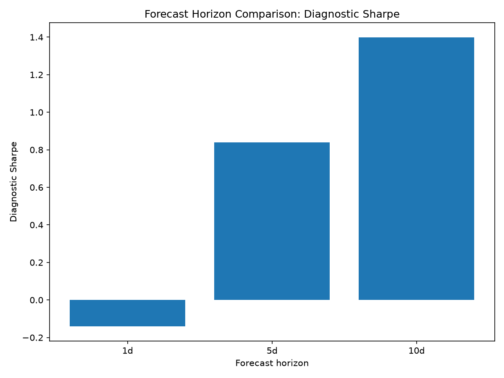
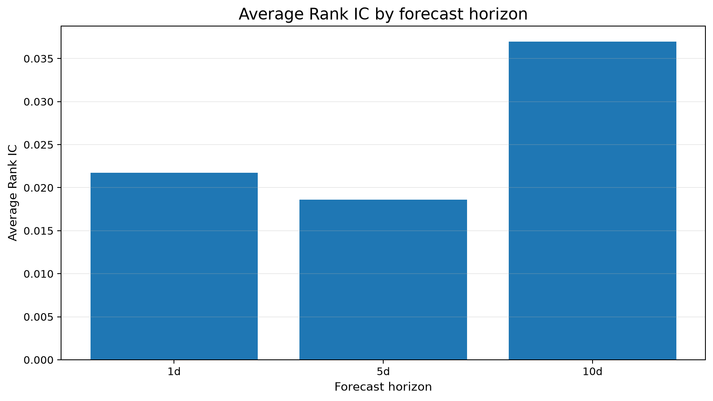
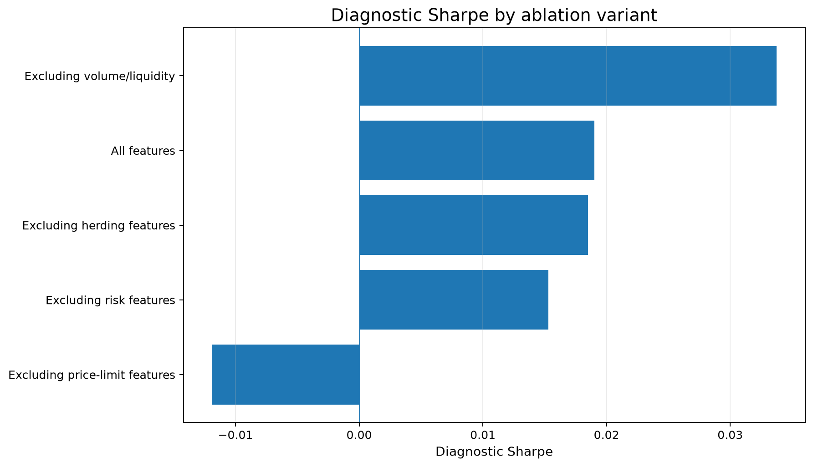

Top gradient boosting feature importance

Meaning: Shows which inputs the gradient boosting model relied on most.
Read: Larger bars mean higher model importance.
Interactive dashboard generated from the VN30 machine-learning framework. This page is a research summary, not an investment recommendation.
Stocks ranked by the latest gradient boosting model score.
| rank | ticker | signal_date | model | model_score | realized_forward_return |
|---|---|---|---|---|---|
| 1 | SSB | 2026-06-23 | gradient_boosting | 2.17% | 6.69% |
| 2 | VHM | 2026-06-23 | gradient_boosting | 1.64% | 0.60% |
| 3 | VIC | 2026-06-23 | gradient_boosting | 1.64% | -4.55% |
| 4 | VCB | 2026-06-23 | gradient_boosting | 0.47% | 1.04% |
| 5 | SAB | 2026-06-23 | gradient_boosting | 0.29% | 1.03% |
| 6 | GVR | 2026-06-23 | gradient_boosting | -0.07% | -2.80% |
| 7 | MWG | 2026-06-23 | gradient_boosting | -0.68% | 2.37% |
| 8 | BID | 2026-06-23 | gradient_boosting | -0.73% | -1.09% |
| 9 | STB | 2026-06-23 | gradient_boosting | -0.76% | 2.55% |
| 10 | VRE | 2026-06-23 | gradient_boosting | -0.77% | -1.49% |
| 11 | VJC | 2026-06-23 | gradient_boosting | -0.93% | 1.02% |
| 12 | ACB | 2026-06-23 | gradient_boosting | -0.95% | 0.91% |
| 13 | LPB | 2026-06-23 | gradient_boosting | -1.00% | 1.29% |
| 14 | SSI | 2026-06-23 | gradient_boosting | -1.15% | -0.87% |
| 15 | TCB | 2026-06-23 | gradient_boosting | -1.25% | 4.20% |
Latest generated long-only optimized weights from the framework.
| signal_date | ticker | issuer_group | optimization_mode | weight | model_score | realized_forward_return |
|---|---|---|---|---|---|---|
| 2026-06-23 | SSB | SeABank | normal | 20.00% | 2.17% | 6.69% |
| 2026-06-23 | VHM | Vingroup | normal | 20.00% | 1.64% | 0.60% |
| 2026-06-23 | VIC | Vingroup | normal | 20.00% | 1.64% | -4.55% |
| 2026-06-23 | VCB | Vietcombank | normal | 20.00% | 0.47% | 1.04% |
| 2026-06-23 | SAB | Sabeco | normal | 20.00% | 0.29% | 1.03% |
Compares whether 1-day, 5-day, or 10-day prediction targets work better.
| forecast_horizon_days | evaluated_dates | average_rank_ic | average_top_5_hit_rate | average_after_cost_return | diagnostic_sharpe | max_active_drawdown | average_turnover | final_cumulative_after_cost_active_return |
|---|---|---|---|---|---|---|---|---|
| 1 | 1613 | -0.0038 | 44.79% | -0.09% | -0.1408 | -152.56% | 38.96% | -1.5082 |
| 5 | 1609 | 0.3380 | 67.61% | 1.82% | 0.8401 | -35.59% | 35.46% | 29.3603 |
| 10 | 1604 | 0.5465 | 80.11% | 4.86% | 1.3989 | -21.95% | 31.74% | 77.9154 |
Checks whether the full feature set beats reduced feature groups.
| ablation_name | evaluated_dates | feature_count | average_rank_ic | average_top_5_hit_rate | average_after_cost_return | diagnostic_sharpe | max_active_drawdown | average_turnover | final_cumulative_after_cost_active_return |
|---|---|---|---|---|---|---|---|---|---|
| all_features | 1609 | 51 | 0.3380 | 67.61% | 1.82% | 0.8401 | -35.59% | 35.46% | 29.3603 |
| without_herding | 1609 | 41 | 0.3380 | 67.63% | 1.82% | 0.8276 | -35.59% | 35.60% | 29.2816 |
| without_price_limit | 1609 | 36 | 0.3168 | 66.61% | 1.69% | 0.7847 | -35.93% | 36.15% | 27.2685 |
| without_risk | 1609 | 49 | 0.3145 | 65.73% | 1.63% | 0.7493 | -36.36% | 36.51% | 26.3014 |
| without_volume_liquidity | 1609 | 40 | 0.3072 | 65.51% | 1.64% | 0.7420 | -32.26% | 36.17% | 26.3414 |
Use the date buttons or bottom slider to zoom. Click a legend item to hide/show a scenario. Double-click a legend item to isolate it.
What this means: Shows whether the strategy builds active value over time after estimated trading costs.
How to read it: A rising line means the strategy is adding active return. Click legend items to hide, show, or isolate scenarios.
What to watch: Look for steady growth, long flat periods, and sharp drops.
Use the date buttons or bottom slider to zoom. Click a legend item to hide/show a scenario. Double-click a legend item to isolate it.
What this means: Shows how far the strategy falls below its previous active-return peak.
How to read it: Values closer to zero are better. Deep negative drops mean the strategy gave back previous gains.
What to watch: Use the slider to inspect the large 2026 drawdown and compare execution assumptions.
Use the date buttons or bottom slider to zoom. Click a legend item to hide/show a scenario. Double-click a legend item to isolate it.
What this means: Shows how much the portfolio changes between rebalancing dates.
How to read it: Higher turnover means more trading. More trading can make live execution less realistic because costs rise.
What to watch: Look for long periods near the maximum turnover level.
Use the date buttons or bottom slider to zoom. Click a legend item to hide/show a scenario. Double-click a legend item to isolate it.
What this means: Shows short-term risk-adjusted performance over rolling 60-trading-day windows.
How to read it: Higher values mean better return per unit of volatility during the recent window.
What to watch: Look for unstable periods where the rolling Sharpe drops sharply.

Meaning: Shows which inputs the gradient boosting model relied on most.
Read: Larger bars mean higher model importance.

Meaning: Compares risk-adjusted behavior across prediction horizons.
Read: Higher is better for this diagnostic metric.

Meaning: Compares how well the model ranks stocks across forecast horizons.
Read: Higher means the ranking aligns better with realized future relative returns.

Meaning: Shows what happens when feature groups are removed.
Read: If performance falls after removing a group, that group likely adds useful information.
| Term | Simple meaning |
|---|---|
| Rank IC | Correlation between the model's stock ranking and realized future return ranking. |
| Diagnostic Sharpe | Return divided by volatility, annualized. Used here as a diagnostic comparison metric. |
| Active return | Return relative to the reference portfolio or benchmark. |
| After-cost return | Return after estimated commission, slippage, and liquidity penalties. |
| Drawdown | Fall from a previous performance peak. |
| Turnover | How much the portfolio changes between rebalancing dates. |
| Feature ablation | Removing feature groups to test whether they help. |
| Forecast horizon | How far ahead the model predicts, such as 1 day, 5 days, or 10 days. |
| Top-5 hit rate | How often top-ranked stocks are among better realized performers. |
| Model score | The model's predicted relative return signal. |